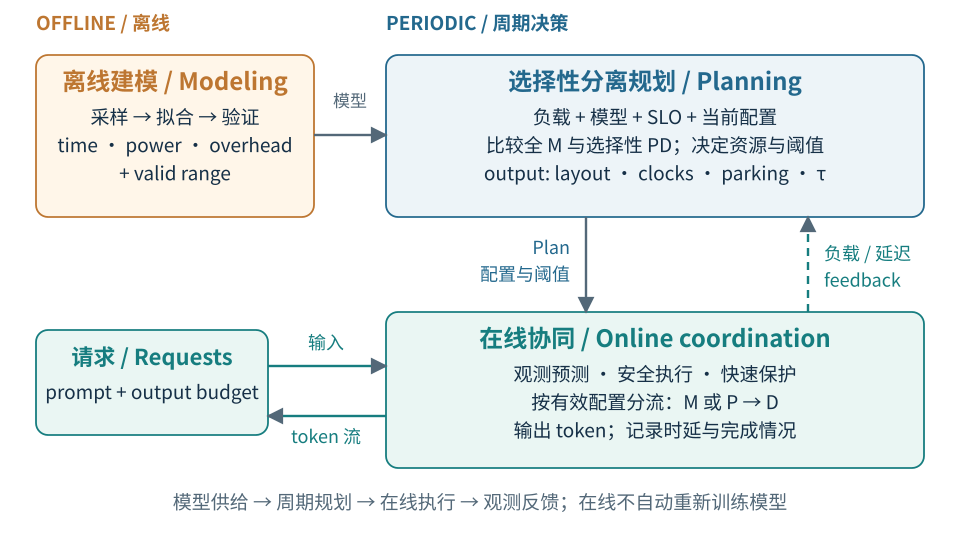
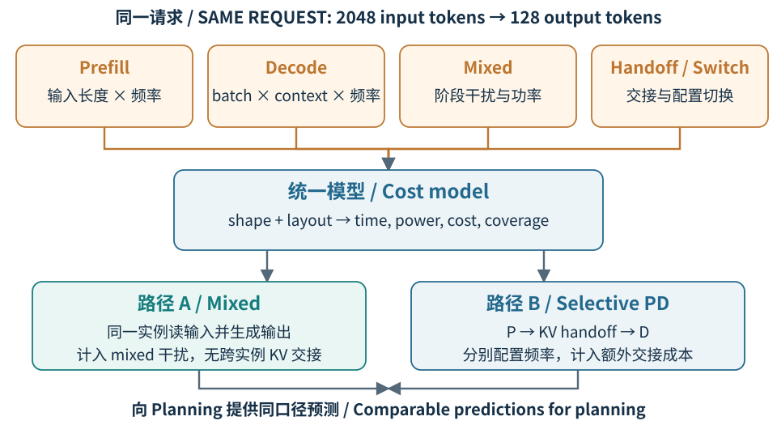
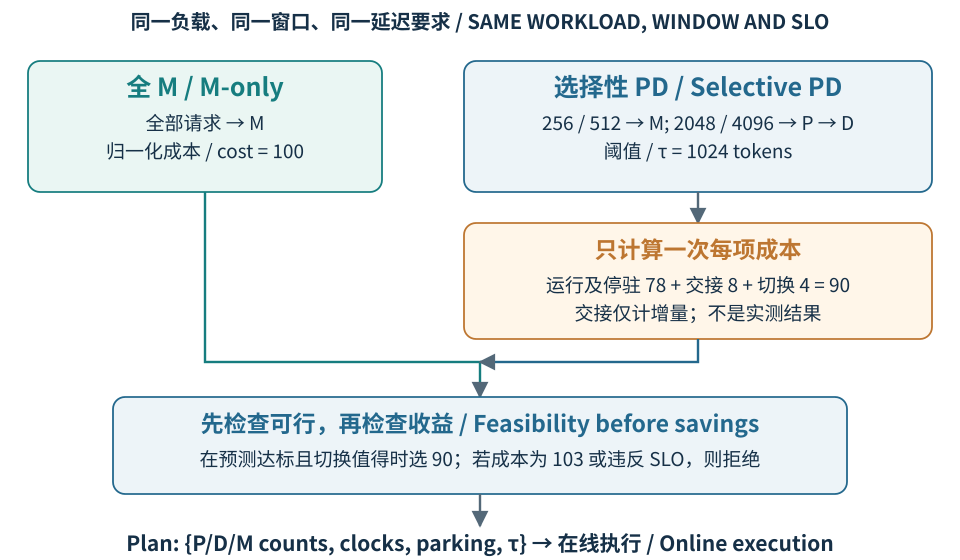
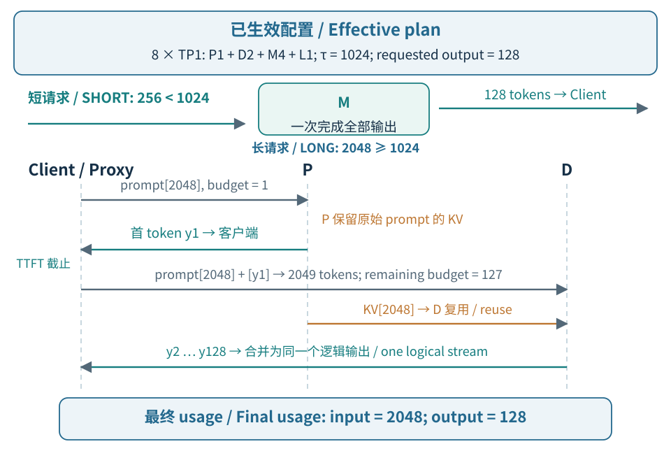
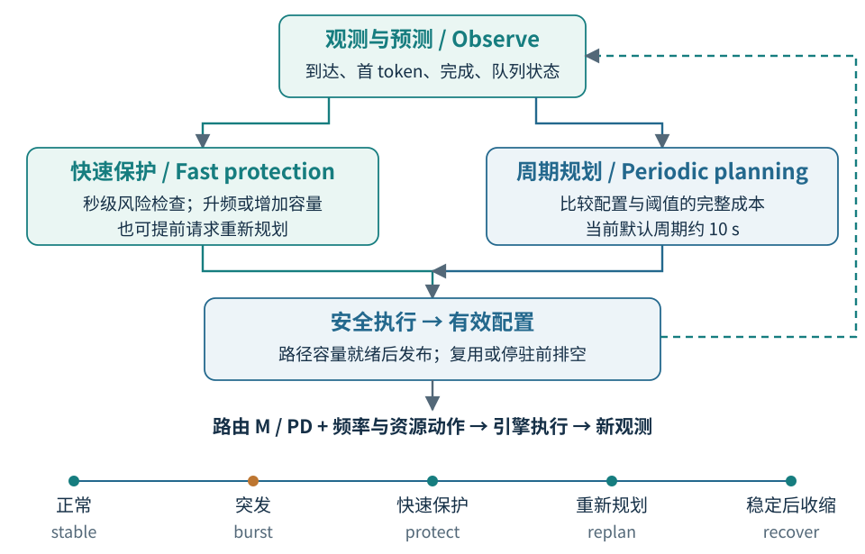

PDblend 不要求所有请求都分离。它先比较分离前后的延迟与能量开销，再将适合的请求交给 P/D，其余请求继续由 M 处理。规划决定“怎样分”，在线系统负责“按计划运行，并应对变化”。
PDblend combines mixed serving with selective prefill–decode disaggregation. A planner compares their latency and energy costs, chooses the resource layout and routing threshold, and lets the runtime enact the plan. Online feedback protects service latency as demand changes.
| 名称 | 通俗含义 / Meaning |
|---|---|
| P · Prefill | 读完输入，建立后续生成需要的 KV 缓存；本方案还由 P 产生首个输出 token。 |
| D · Decode | 使用已有 KV 缓存，逐步生成后续 token。token 是模型处理的文本片段，不一定等于一个汉字。 |
| M · Mixed | 同一个实例承担 P 和 D 两阶段，省去跨实例交接；并发执行时也可能互相影响。 |
| 技术模块 | 输入 / Input | 输出 / Output |
|---|---|---|
| 离线建模 Modeling | 模型、硬件、并行配置、测量样本 | 时间、功率、交接与切换成本，以及模型适用范围 |
| 选择性规划 Planning | 离线模型、负载估计、延迟要求、当前配置 | Plan：P/D/M 数量、频率、停驻状态、长度阈值 τ |
| 在线协同 Online | 请求、Plan、运行状态及延迟观测 | 输出 token、有效配置、资源动作与反馈记录 |
evidence.json。
图 1 / Figure 1. 离线模型供给、周期决策与在线反馈。实线为模型、请求或控制流，虚线为运行观测反馈。在线观测用于下一轮决策，不表示自动重训离线模型。
Offline measurements provide the cost model. The planner uses this model and a demand estimate to select a complete configuration. The runtime routes requests through ready instances and reports observed demand and latency. Fast protection can trigger an earlier plan update; routing continues to follow the effective configuration.
三个需要记住的量： TTFT 是提交请求到看到首个 token 的时间；TPOT 是首个 token 之后每个输出 token 的平均耗时；SLO 是对这些延迟提出的服务目标。本文的能量范围为指定 GPU 的板卡能量。
阅读导航 / Reading map: 离线建模 pp. 3–5 · 选择性规划 pp. 6–8 · 在线协同 pp. 9–12。实例身份、频率与布局必须使用匹配的离线画像。
同一个请求可以在 M 实例上完成全部计算，也可以先在 P 实例处理输入，再把 KV 交给 D 实例生成输出。两条路径的时延与能耗并不相同。规划器需要统一的成本模型，判断分离执行的收益能否抵消传输开销，并比较不同角色数量与频率。
The same request can complete on one mixed instance or pass from a prefill instance to a decode instance through a KV transfer. These paths have different latency and energy costs. A common model lets the planner compare layouts and frequencies, and decide whether separation can justify its additional overhead.
模型成本不仅取决于输入长度，还随输出长度、并发 batch（一起计算的请求）、已有上下文和 GPU 频率变化。M 实例中的 prefill 会干扰正在生成的请求；P→D 则新增传输与协调开销。因此，只测单次 prefill 的速度，不能判断完整路径是否更好。
Cost depends on prompt and output lengths, concurrent batch size, accumulated context, and GPU frequency. Prefill work on a mixed instance can delay ongoing decode work, while a separated path adds transfer and coordination. Measuring isolated prefill speed is therefore insufficient to compare the complete execution paths.
无需为每个完整部署重新做一次实验。可以把成本拆成 prefill、decode、混合干扰、KV 交接与配置切换等组成项，离线测量后复用。模型提供有适用范围的预测；规划器再结合请求量与队列状态，完成配置比较和 SLO 判断。
Each complete deployment does not need a separate experiment. Reusable measurements of prefill, decode, mixed interference, KV handoff, and configuration changes can describe its components. The model supplies predictions within a stated validity range; the planner combines them with demand and queueing estimates to compare configurations and check SLOs.

图 2 / Figure 2. 以 2048 个输入 token、128 个输出 token 的请求为例：M 路径需要计入混合干扰，P→D 路径需要计入 KV 交接。全篇沿用八个 TP1 实例的说明场景，模型输出不直接决定路由。
For a request with 2048 input and 128 output tokens, mixed execution includes interference and separated execution includes KV handoff. Eight TP1 instances provide a shared illustrative setting; the model supplies costs rather than making the routing decision.
一次查询给出请求形状、候选负载、频率和实例配置。返回值使用同一单位与计量范围，让规划器可以组合成本，而不必了解模型内部的拟合形式。
A query specifies the request shape, candidate load, frequency, and instance configuration. Consistent units and measurement scope let planning compose the returned costs without depending on the fitting method.
| 输入 / Input | 输出 / Output | 用途 / Use |
|---|---|---|
| 输入长度、batch、上下文、频率 Length, batch, context, frequency | P/D 服务时间、M 干扰 Service time, mixed interference | 容量与时延估计 Capacity and latency |
| 角色、负载、频率、TP 配置 Role, load, frequency, TP | P/D/M 平均功率 Mean power by role | 候选配置能耗 Configuration energy |
| KV 大小、源和目标配置 KV size, source and target | 交接时间与增量能量 Handoff time and added energy | M 与 P→D 比较 Path comparison |
| 当前状态、目标状态 Current and target states | 切换时间与增量能量 Switching time and energy | 是否值得切换 Whether to reconfigure |
| 候选请求与配置 Candidate request and layout | KV 容量、预测有效性 KV capacity and validity | 排除不可行候选 Reject invalid candidates |
例如，某个八实例配置的运行及停驻基础功率为 1200 W，持续 10 s，则基础能量为 12 kJ。这里不含另计的交接和切换增量；若基础测量已包含某项，就不再加一次。以上数字仅解释机制，不代表实测性能。
Illustratively, base operating and standby power of 1200 W over 10 s gives 12 kJ. This base excludes separately charged handoff and switching increments; never add an item already included in the measurement. These are explanatory values, not measurements.
Current code provides performance and power models, coverage checks, handoff timing, and partial switching costs; mixed power uses a time-share approximation. Uniformly validated incremental handoff energy remains a design target.
Cost-Aware Planning for Selective Disaggregation
同一批请求并不适合相同的执行方式。长提示词可能受益于预填充与解码分离，短提示词却可能为交接付出更多代价。规划器因此同时决定哪些请求走混合实例、哪些请求走 P→D，以及每条路径使用多少实例和什么频率，让分离带来的收益真正留下来。
Requests do not all benefit from the same execution path. Long prompts may benefit from separating prefill and decode, while short prompts can pay more for the handoff than they save. The planner jointly chooses the routing threshold, replica counts, and clock speeds so that disaggregation delivers a net benefit.
分流阈值会改变两条路径的请求比例，资源配置又会改变排队、延迟和能耗。只看某个阶段的计算速度，容易漏掉 KV 交接、停驻实例和切换配置的开销；只看平均负载，也可能低估长请求造成的容量压力。因此，候选方案必须在相同条件下整体比较。
Changing the threshold moves work between the two paths. Changing replica counts or clocks then affects queueing, latency, and energy. A faster stage alone does not imply a better deployment: KV handoff, standby power, and reconfiguration also cost energy. Candidate plans need a common workload, time window, and set of constraints.
先用同一份负载估计比较完整方案，再将选定阈值交给在线路由器。只有模型覆盖充分、容量与延迟约束均满足，而且节省的运行能量足以覆盖额外交接及切换成本时，才采用选择性分离。每个请求仍会单独分流，但不必在每次到达时重新求解资源配置。
Compare complete plans using the same workload estimate, then pass the chosen threshold to the online router. Selective disaggregation is useful only when the models cover the candidate, predicted constraints hold, and operating savings cover the added costs. Requests are routed individually, while resource planning runs periodically.
Approach: Compare Complete Costs over the Same Window
输入：到达率和长度分布、离线模型、SLO、GPU 预算、当前配置及规划窗口 H。输出：Plan，即角色数量、频率、停驻状态与长度阈值 τ。
Input: workload estimates, offline models, SLOs, GPU budget, current plan, and horizon H. Output: one Plan containing role counts, clocks, parking states, and threshold τ.

图 3｜8 个 TP1 实例的归一化示例：输出均为 128 tokens，τ=1024。目标可为 P1+D2+M4+L1；90 优于 100，但若总量为 103 或预测不达标，则拒绝该候选。此配置与数值仅解释方法，不是实测最优结果。
Figure 3. Illustrative normalized energy on eight TP1 instances. The example plan is P1+D2+M4+L1. Reject the candidate if its cost rises to 103 or predicted constraints fail; these are not measured optima.
Approach: Turn Candidate Comparisons into One Plan
下面是目标设计的规划算法。F 表示负载估计；H 为统一窗口；ε 为收益门槛。Current 是在线层已就绪的初始或当前配置；候选包含它，但必须重新检查其可行性。
F is workload, H the horizon, and ε the savings margin. Current must be a ready initial or active configuration; re-evaluate it alongside new candidates.
| 1 | SELECTIVE-PD-PLAN(F, Models, SLO, Budget, Current, H) |
| 2 | A ← ENUMERATE-M-AND-PD-PLANS(Budget) ∪ {Current} |
| 3 | Feasible ← ∅ |
| 4 | for each plan x ∈ A |
| 5 | load ← SPLIT-WORKLOAD(F, x.threshold, x.layout) |
| 6 | if not COVERED(Models, x, load): continue |
| 7 | y ← PREDICT(Models, x, load) |
| 8 | if not SLO-AND-CAPACITY-OK(y, SLO): continue |
| 9 | score[x] ← WINDOW-ENERGY(y, H) |
| 10 | + EXTRA-HANDOFF-ENERGY(y, H) |
| 11 | + SWITCH-ENERGY(Current, x) |
| 12 | Feasible ← Feasible ∪ {x} |
| 13 | if Feasible = ∅: return CONSERVATIVE-FALLBACK(Current, Models, Budget) |
| 14 | best ← MIN-SCORE(Feasible, score) ▹ ties prefer M-only |
| 15 | if Current ∈ Feasible and score[Current] − score[best] ≤ ε·score[Current] |
| 16 | return Current |
| 17 | return PLAN(best.layout, best.clocks, best.parking, best.threshold) |
窗口能量含停驻实例；只计未来增量成本，切换到自身为零。覆盖不足时不编造预测。保守回退优先恢复容量，并可限制准入，不保证过载下达标。Plan 由在线执行器落实。
Include standby and future incremental costs; switching to self costs zero. Missing coverage yields no invented estimate. Fallback may limit admission and does not guarantee SLOs under overload.
Online Coordination and Selective Routing
离线模型描述的是测量条件下的服务能力，规划器给出的则是下一阶段的资源安排。真实请求仍会突发到达，长度和排队时间也会变化。因此，系统需要一层持续运行的在线协同机制，把计划落实到引擎，并在预测偏差扩大前保护正在服务的请求。
Offline models describe service capacity under measured conditions, while the planner proposes a resource allocation for the next interval. Real arrivals remain bursty, and request lengths and queues keep changing. An online coordinator must turn plans into engine actions and protect requests before prediction errors cause substantial latency violations.
请求需要立即选择去向，延迟风险需要秒级响应，而资源规划和实例唤醒耗时更长。同时，旧请求不能因角色改变而失去执行位置，P与D之间还要保持KV和输出的一致性。难点是让这些操作并行推进，又始终清楚哪些资源和配置已经可用。
Routing needs an immediate decision, protection needs a rapid reaction, and planning or waking an instance takes longer. Meanwhile, ongoing requests must retain their execution ownership, and a P-to-D handoff must preserve both KV state and output continuity. Coordination must therefore track what is ready while allowing these operations to progress concurrently.
将慢速规划、快速保护和逐请求执行连接到同一份有效配置：规划器决定资源组合，保护机制及时提高服务能力，路由器只使用已就绪的实例。每条请求固定自己的执行路径，完成结果再回到观测端；降频和缩容则等待稳定窗口，而非跟随短暂波动反复切换。
Connect planning, protection, and request execution through one effective configuration. Planning chooses resources, protection raises capacity when needed, and routing uses ready instances. Each request keeps its selected execution path and reports its outcome. Reducing capacity requires stable observations, preventing brief fluctuations from repeatedly reversing resource decisions.
From selective routing to a continuous output stream
沿用8个TP1实例的示例配置：P×1、D×2、M×4、L1×1，路由阈值为1024。短输入256进入可用的M实例；长输入2048在存在兼容P/D组合时进入分离路径。图中仅展开一个P、一个D和一个M，L1表示权重保留、降低频率的停驻实例。输出预算均为128，数值用于解释机制。
The example uses eight TP1 instances: one P, two D, four M, and one L1 instance, with a threshold of 1024. A 256-token prompt takes an available M path; a 2048-token prompt takes a compatible PD path. Only the selected P, D, and M are expanded below. L1 retains weights at low clocks. The output budget is 128; values are illustrative.

图4 · 首token接力保留P的真实输出，D继续同一序列。图示逻辑依赖，不规定KV传输与计算的精确重叠时序。Figure 4. First-token carry preserves one logical sequence. Arrows show dependencies, not exact compute–transfer overlap.
P先处理2048个输入token，产生首token y1，并交接原始输入的KV。代理立即发出y1，随后把“原prompt + y1”交给D：其prompt长度为2049，剩余输出预算为127。D复用前2048个位置的KV，继续生成y2至y128；合并后的usage仍为输入2048、输出128，首token不会重复计数。
P computes the original prompt, produces y1, and provides its KV. The proxy emits y1 and sends D the extended 2049-token prompt with a remaining budget of 127. D reuses the original 2048 positions and produces y2 through y128. Combined usage remains 2048 input tokens and 128 output tokens.
Fast protection, slower planning, and safe transitions
在线层汇总到达、首token和完成事件，平滑估计到达率，统计长度与在途负载，判断SLO风险。当前代码的示例周期为1秒检查保护、10秒执行规划；风险变化也可提前触发规划。快速保护作用于候选配置的最终安全约束，压力不会绕过有效配置直接改变某条请求的分流规则。
Arrival, first-token, and completion events update demand estimates and SLO risk. Current example periods are one second for protection and ten seconds for planning, with earlier replanning when risk changes. Protection constrains the resulting configuration; pressure does not silently alter an individual request's routing rule.

图5 · 快循环应对突发，慢循环重新配置资源；动作完成反馈决定哪些变更可以生效。Figure 5. Protection handles bursts, planning revises resources, and action feedback determines which changes become effective.
扩容时，实例完成唤醒、频率设置和就绪检查后才接收新请求。缩容时，先停止准入，再等待旧请求排空；请求已经选定的P/D或M路径保持不变。角色重标记影响后续请求；复用前需排空旧角色工作，或检查新旧负载重叠是否可行。每次变更保留目标、进度和有效版本，不假设所有实例同时切换。
Admit work only after wake-up, clock changes, and readiness checks complete. Before shrinking, stop admission and drain existing work. Requests keep their paths. Before role reuse, drain previous work or validate overlapping load. Track the target, progress, and effective version rather than assuming a simultaneous fleet-wide switch.
Event-driven coordination with asynchronous request execution
下列算法概括目标在线设计，e表示事件。PLAN使用上一章的方法；后台任务完成后返回事件。只接收当前版本的回执；新阈值须与足够的就绪路径容量一起发布。过渡时保留旧配置或检查中间配置，必要时限制准入。
This algorithm expresses the target design. PLAN uses the previous chapter. Background work reports completion events. Accept current-version acknowledgements only. Publish a new threshold with sufficient ready path capacity; retain the old configuration or validate intermediate states, limiting admission if needed.
| 1 | procedure ONLINE-COORDINATE() |
| 2 | config ← READY-SAFE-START(); candidate ← config; pending ← ∅ |
| 3 | while the service is running |
| 4 | e ← NEXT-EVENT-OR-TIMER() |
| 5 | state ← OBSERVE-AND-UPDATE(e) |
| 6 | if REQUEST-RESULT(e) then RECORD-OUTCOME(e) |
| 7 | if ACTION-ACK(e) then config ← PUBLISH-ADMISSIBLE(e, pending, config) |
| 8 | if NEW-REQUEST(e) then SPAWN SERVE(e.request, config) |
| 9 | risk ← UPDATE-PROTECTION(state) |
| 10 | if SLOW-TICK(e) or RISK-CHANGED(risk) then |
| 11 | SPAWN-OR-COALESCE-PLAN(FORECAST(state), config) |
| 12 | if PLAN-READY(e) and STILL-VALID(e, state) then |
| 13 | candidate ← e.plan |
| 14 | target ← STABILITY-FILTER(candidate, config, state) |
| 15 | target ← PROTECT(target, risk) |
| 16 | if NEW-VALID-TARGET(target, config, pending) then |
| 17 | pending ← START-ASYNC-TRANSITION(config, target) |
| 18 | HANDLE-FAILED-ACTIONS(e, pending) |
| 1 | procedure async SERVE(request, config) |
| 2 | path ← NONE; try |
| 3 | path ← VALIDATE-AND-RESERVE(request, SNAPSHOT(config)) |
| 4 | if path = NONE then raise UNAVAILABLE |
| 5 | if path = M or request.output = 1: result ← await SINGLE(path, request) |
| 6 | else: result ← await CARRY-FIRST-THEN-DECODE(path, request) |
| 7 | catch failure: result ← FAILED(failure) |
| 8 | finally: REPORT-ONCE-AND-RESOLVE-OWNERSHIP(request, result, path) |
定时器独立触发，规划任务合并去重，过期结果丢弃。PROTECT只在覆盖内对已有角色增容或升频，保持阈值与保护容量下界；改分流需重新评估。预算为1时不占用D；成功、失败及取消均上报一次，资源释放未确认时隔离。
Timers fire independently; coalesce planning jobs and discard stale results. PROTECT preserves the threshold and capacity floor, adding covered capacity or clocks to existing roles. Re-evaluate routing changes. One-token outputs reserve no D. Report each outcome once; quarantine uncertain releases.